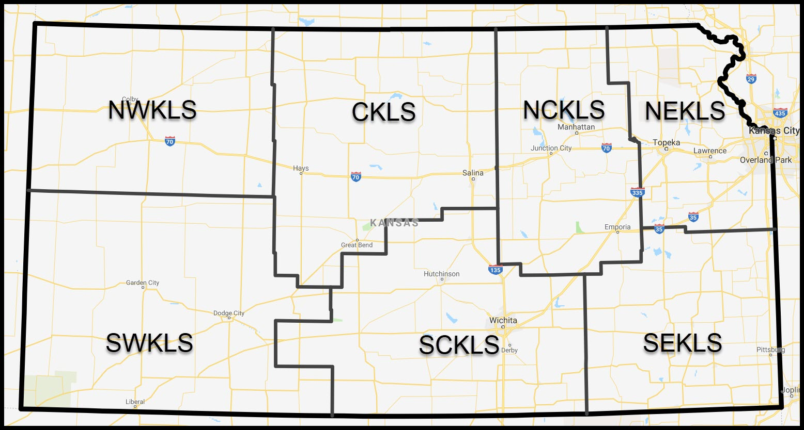

Koha Open Source ILS
Its history, its community, its use in libraries worldwide and in Kansas
George Williams - Northeast Kansas Library System
Question
How many of you had heard of Koha before you read the word "Koha" in the title of this presentation?
|
What software does your bank use? |
What software does your water department use? |
|
What software does your library use? |
George Williams
Next Search Catalog Coordinator
Northeast Kansas Library System
www.nekls.org
koha-US President 2019
www.koha-us.org
Conference topics
Open source software and programming languages
Communities built around open source technology
Open knowledge and education
Anything else considered "open"
"The mission of librarians is to improve society through facilitating knowledge creation in their communities."
-- David Lankes - ATLAS OF NEW LIBRARIANSHIP
Google can bring you back 100,000 answers.
A librarian can bring you back the right one.
-- Neil Gaiman (YouTube)
Koha is an unqualified open source success story
First open source ILS
First fully web based ILS
Used worldwide - on all 7 continents
Most used open source ILS in the world
Probably the most used ILS in the world
Really brief history of ILS
|
Card catalog production |
Circulation Desk |
The 70s
Advertisement for CLSI from
COLLEGE AND RESEARCH LIBRARIES, v. 36, no. 4, July 1975
The 80s and 90s
DYNIX Screenshot
From Wikipedia User:Skylarstrickland, CC BY-SA 3.0, Link
Beginnings of Koha
Levin, New Zealand
Beginnings of Koha
Te Takere Community Center and Library
Koha

- Koha means "gift" in Maori
- The logo comes from the shape of the Silver Fern
which the Maori call "koru" - Symbolizes new growth, life, and peace
Koha Timeline 2000
- 2000 - Put into production on January 3 at HLT Librraries
- 2000 - Mailing list and website created
- 2000 - June - Koha 1.0 is made available for download
- 2000 - Within 3 hours, 10 people had downloaded Koha
- 2000 - Only the four original developers have code in Koha
Koha Timeline 2001-
- 2001-2005 - Bugzilla, Wiki, Marc support
Athens County Public Library in Ohio
first public library in USA to use Koha as their ILS
39 people have code in Koha - 2006-2010 - KohaCon, Git, Zebra, LibLime fork
130 people have code in Koha - 2011-2015 - Bi-annual release, LibLime issue resolved, Regional users groups
305 people have code in KohaCon - 2016-Present ElasticSearch, MariaDB is added
over 400 people have code in Koha
Kansas

Seven Regional Libraries
Central Kansas Library System
Regional shared catalog called "Pathfinder Central" - 2007
Pathfinder Central
Koha in Kansas
Regional shared catalog called "Next Search Catalog" - 2008
Next Search Catalog
Koha in Kansas
Regional shared catalog called "SEKnFind" - 2008
SEKnFind
Koha in Kansas
There are several other libraries in Kansas using Koha that are not affiliated with any of the regional library systems.
In SCKLS, Derby Public Library is organizing a shared Koha catalog that is going live on community Koha this weekend.
How Koha helps Kansas Libraries
Cost savings
Sustainability
Cooperation between libraries
World Class ILS
Libraries vs Starbucks
160 Kansas libraries using Koha
94 Starbucks
George Williams
Next Search Catalog Coordinator
Northeast Kansas Library System
www.nekls.org
gwilliams@nekls.org
2019 koha-US President
president@koha-us.org
www.koha-us.org